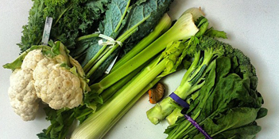

Reducing the Negative Effects of Aspartame: Detox Methods and Foods that Help
Explore how you can mitigate the negative effects of aspartame, phenylalanine, and methanol consumption with dietary choices and detox methods.
Introduction
Aspartame consumption, and consequently the intake of its breakdown components—phenylalanine, methanol, and aspartic acid—has been linked to several potential health concerns. While reducing or avoiding aspartame is the most direct way to mitigate these risks, there are several other steps you can take to counteract its negative effects. This post will explore foods and methods that can help detoxify your body, mitigate harm, and support overall well-being.
Eat Cruciferous Vegetables to Help Break Down Formaldehyde
One of the concerning by-products of aspartame metabolism is formaldehyde, which results from methanol breakdown in the body. Cruciferous vegetables like broccoli, brussels sprouts, kale, and cauliflower contain compounds that can support liver detoxification. These vegetables are high in sulforaphane, a compound shown to help neutralize formaldehyde and support the body's natural detox pathways.(1)
Increase Antioxidant-Rich Foods
Oxidative stress caused by methanol and phenylalanine can contribute to inflammation and other health issues. Eating foods rich in antioxidants helps combat this. Antioxidants neutralize free radicals, which are unstable molecules produced by oxidative stress. Foods like blueberries, strawberries, spinach, dark chocolate, and green tea are excellent sources of antioxidants.(2)
Hydrate and Support Kidney Health
Drinking plenty of water is key to flushing out toxins from your body. Staying hydrated supports kidney function, which helps in the filtration and removal of toxic substances, including the by-products of aspartame. Adding natural diuretics like cucumber or lemon to water can enhance detoxification.(3)
Eat Foods Rich in Glutathione
Glutathione is a powerful antioxidant produced by the body that plays a key role in detoxification. Foods that can help increase glutathione levels include asparagus, spinach, avocado, and garlic. These foods can help support the liver, which is essential for processing toxins like methanol and phenylalanine.(4)
Avoid Alcohol and Processed Foods
Alcohol and processed foods place extra burden on the liver, which is already working to detoxify methanol and formaldehyde from aspartame. Reducing alcohol and avoiding foods high in artificial ingredients, preservatives, and sugar will give your liver a better chance at efficiently processing harmful by-products.(5)
Supplement with Milk Thistle and N-Acetylcysteine (NAC)
Milk thistle is a herbal supplement that is known for its liver-protective properties. It contains silymarin, which has antioxidant and anti-inflammatory benefits, and helps support liver detoxification. N-Acetylcysteine (NAC) is another supplement that supports the production of glutathione in the body and helps protect against oxidative stress. These supplements can be beneficial in reducing the impact of methanol and formaldehyde on the liver.(6)
Engage in Regular Physical Activity
Exercise is a natural way to boost detoxification. Sweating helps to excrete toxins, and physical activity helps improve circulation, which in turn supports all of the body’s detoxification systems. Activities like yoga, running, or even brisk walking can be beneficial.(7)
Consume Probiotic-Rich Foods
Gut health plays an essential role in overall detoxification and reducing inflammation. Foods rich in probiotics, like yogurt, kefir, sauerkraut, and kimchi, can promote healthy gut bacteria, which supports the detoxification of toxins and helps mitigate negative effects from phenylalanine and methanol.(8)
Conclusion
Reducing your intake of aspartame and supporting your body's natural detox systems can help mitigate potential negative effects. By consuming cruciferous vegetables, antioxidant-rich foods, staying hydrated, and incorporating probiotic-rich foods, you can support your body in processing and eliminating harmful substances. Supplements like milk thistle and NAC, along with regular exercise, can also enhance detoxification. While more research is still needed to fully understand the long-term effects of aspartame, taking these proactive steps can help you make healthier choices and reduce potential risks.
References
- Healthline. "The Benefits of Cruciferous Vegetables for Detoxification." Healthline Website
- National Institutes of Health (NIH). "Antioxidants and Their Role in Health." NIH Website
- Mayo Clinic. "Hydration: Why It's So Important." Mayo Clinic Website
- WebMD. "Glutathione: The Master Antioxidant." WebMD Website
- Harvard Health. "The Impact of Alcohol on Liver Health." Harvard Health Website
- National Center for Complementary and Integrative Health. "Milk Thistle and NAC for Liver Support." NCCIH Website
- Centers for Disease Control and Prevention (CDC). "The Importance of Physical Activity for Health." CDC Website
- Gut Health Journal. "Probiotics and Their Impact on Detoxification." Gut Health Journal Website